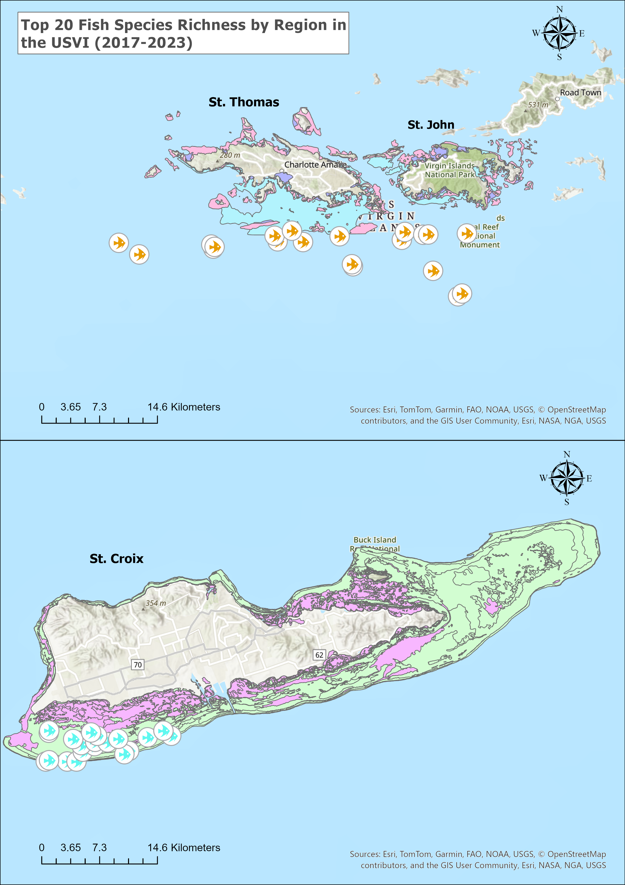
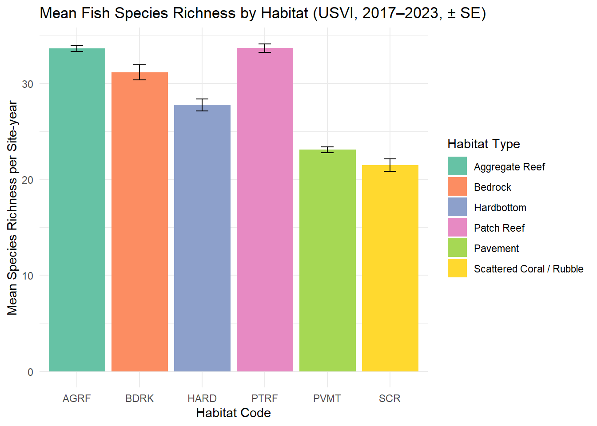
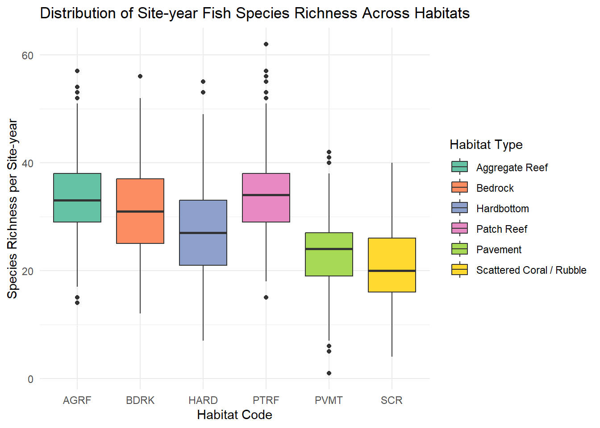
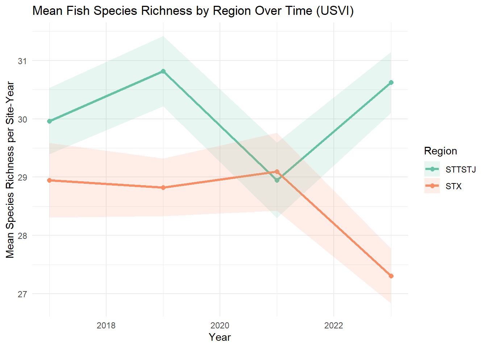

1 Introduction
This document summarizes patterns in fish species richness across the U.S. Virgin Islands (USVI) using National Coral Reef Monitoring Program (NCRMP) fish survey data collected between 2017 and 2023. Data for St. Thomas/St. John and St. Croix were downloaded using the rvc package and prepared using functions from tidyverse and janitor. The focus of the analysis is to explore how species richness varies across habitats, between regions, and through time. The project also identifies the most frequently observed species in the dataset. The overall goal is to provide a clear and reproducible workflow that highlights basic spatial and temporal biodiversity trends in the USVI.
2 Study Area
NCRMP surveys follow a stratified random sampling design across shallow, hard-bottom reef habitats in the USVI. Each sampling unit contains extensive site-level information, including habitat code, latitude and longitude, region, and sample unit ID. These metadata allow richness to be summarized meaningfully across spatial and ecological gradients. The figure below shows the survey sites in a condensed version. It represents the top 20 survey areas with the highest species richness in each region. It also provides a view of the habitat types categorized by color. It was generated in ArcGIS Pro and exported.
3 Sampling Summary
Before examining species richness patterns, it is important to understand the structure of the dataset. The tables below summarize the number of sampled sites, the number of species recorded, the range of years represented, and the distribution of sampling effort across regions. These context summaries help ensure that any differences in richness are interpreted with a clear understanding of survey effort and spatial coverage.
n_sites
1 1319 n_species
1 325 min_year max_year n_years
1 2017 2023 4 region n_sites
1 STTSTJ 704
2 STX 6154 Methods
All analyses were performed in R. NCRMP fish survey data for the years 2017–2023 were downloaded using the getRvcData() function from the rvc package. The dataset was cleaned by standardizing column names with clean_names(), filtering to remove zero-count records when summarizing presence-only data, selecting relevant columns, and organizing variables into consistent formats for summarization. Species richness was calculated at the site level by counting distinct species per site. These values were then summarized across habitat type, region, and year. Figures for the results section were generated in the accompanying analysis script (01_rvc_richness.R), using ggplot2 for visualization.
5 Results
5.1 Habitat Richness
Mean species richness varied strongly by habitat type. Habitats with high structural complexity, such as aggregate reef, tended to support higher numbers of species. The figure below shows average site-level richness across habitat types.

The full distribution of site-level richness values within each habitat category provides additional context. Some habitats showed narrow ranges of richness, while others displayed more variation, likely reflecting differences in physical structure and ecological conditions.

5.2 Regional Trends
To compare patterns between St. Thomas/St. John and St. Croix, species richness was averaged by region for each survey year. The results show modest but noticeable differences between regions, with St. Thomas/St. John often exhibiting slightly higher average richness. These differences can reflect habitat availability, ecological conditions, or differences in sampling intensity across years. The figure below shows mean richness by region across the study period.

5.3 Most Frequently Observed Species
The table below lists the twenty most frequently observed species across all sampled sites and years. These dominant species represent common reef-associated fishes that appear consistently in NCRMP diver surveys. Their frequent occurrence makes them useful indicators of general reef condition.
| Species Code | Common Name | Scientific Name | Count |
|---|---|---|---|
| THA BIFA | bluehead | Thalassoma bifasciatum | 12467 |
| SPA AURO | redband parrotfish | Sparisoma aurofrenatum | 11783 |
| HAL GARN | yellowhead wrasse | Halichoeres garnoti | 10310 |
| ACA BAHI | ocean surgeon | Acanthurus bahianus | 9832 |
| STE PART | bicolor damselfish | Stegastes partitus | 8965 |
| SCA ISER | striped parrotfish | Scarus iseri | 7568 |
| ACA COER | blue tang | Acanthurus coeruleus | 7556 |
| SCA TAEN | princess parrotfish | Scarus taeniopterus | 6871 |
| HAL BIVI | slippery dick | Halichoeres bivittatus | 6758 |
| CHR CYAN | blue chromis | Chromis cyanea | 5820 |
| SPA VIRI | stoplight parrotfish | Sparisoma viride | 5584 |
| ACA CHIR | doctorfish | Acanthurus chirurgus | 4577 |
| CEP FULV | coney | Cephalopholis fulva | 4010 |
| HAL MACU | clown wrasse | Halichoeres maculipinna | 3722 |
| HAE FLAV | French grunt | Haemulon flavolineatum | 3129 |
| CAR RUBE | bar jack | Caranx ruber | 2868 |
| CHA CAPI | foureye butterflyfish | Chaetodon capistratus | 2846 |
| HOL RUFU | longspine squirrelfish | Holocentrus rufus | 2824 |
| HOL ADSC | squirrelfish | Holocentrus adscensionis | 2555 |
| OCY CHRY | yellowtail snapper | Ocyurus chrysurus | 2488 |
6 Interpretation
The results indicate clear ecological patterns across the USVI. Habitat complexity plays a major role in shaping species richness, with structurally rich habitats supporting higher numbers of species. Regional comparisons suggest that St. Thomas/St. John may sustain slightly greater richness than St. Croix, although differences are not large and may partly reflect survey coverage. Temporal variation in richness is apparent in the dataset, but year-to-year changes may be influenced by both ecological processes and sampling effort. Finally, the species observed most frequently are small, abundant reef fishes commonly captured in NCRMP stationary point-count surveys.
7 Acknowledgements
This analysis was completed as part of MMES 565B: Data Wrangling in R and Introduction to GIS at the University of the Virgin Islands (Fall 2025). Data were accessed through the rvc R package, drawing from NCRMP reef fish surveys conducted across the USVI between 2017 and 2023. Special thanks to Dr. Jeremiah Blondeau for course materials, guidance, and analytical support throughout the semester.